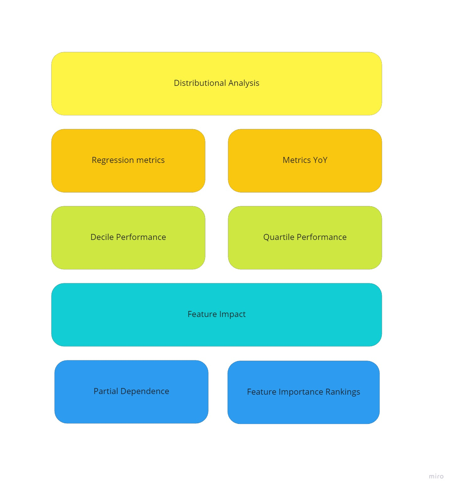
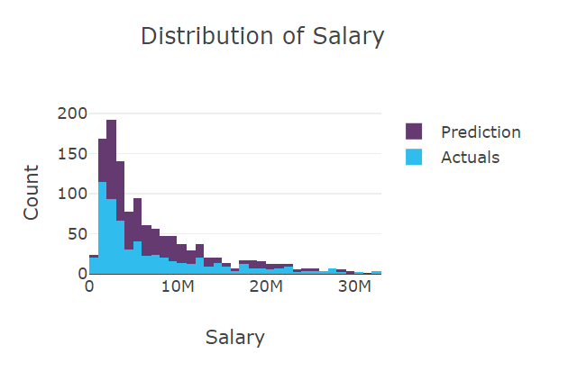
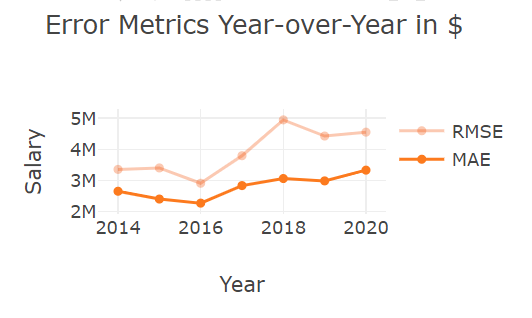
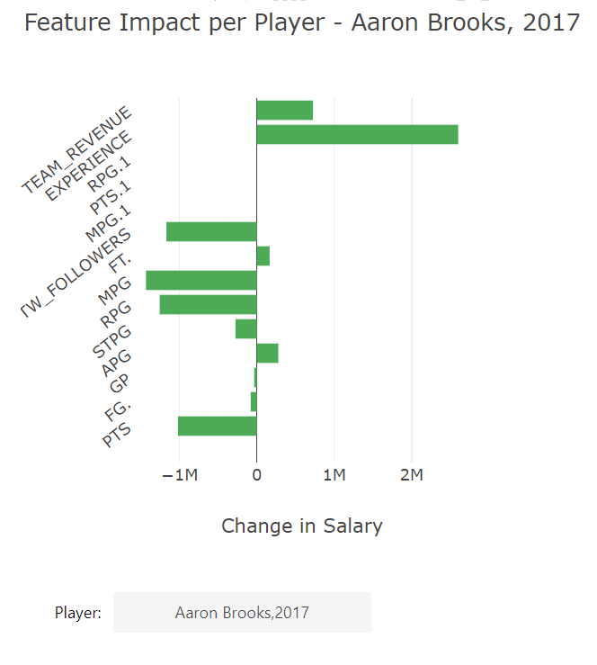
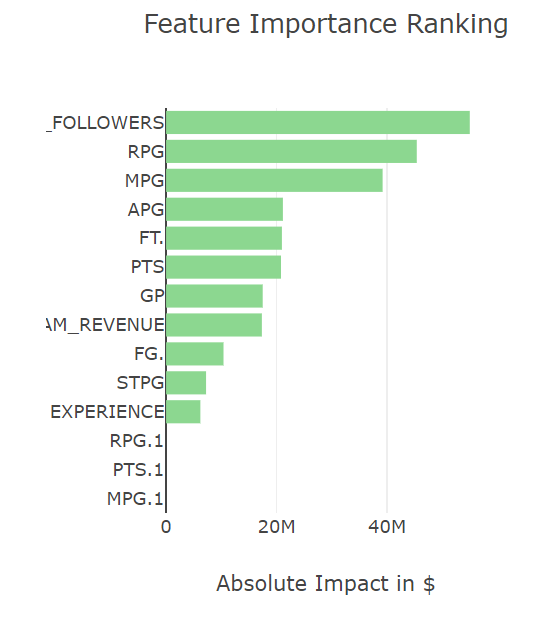

N328 - Visualizing Information The dashboard visualizes model outcomes from a Machine Learning model which predicts NBA Salary. Negotiation of player salaries can be complex as the value of a player for any given time in their career is determined by both in-game statistics and heuristics, which may be challenging to define and capture (e.g., player marketability, influence, risk of injury). Additionally, machine learning algorithms tend to be opaque, are often not intrinsically interpretable, and require post hoc explanations. Model-agnostic explanations (e.g., Shapley values) help us understand why a machine learning model made a particular prediction by examining the features that influenced that prediction most. Ultimately, gathering evidence to summarize machine learning model outcomes involves the interpretation of various performance dimensions and the analysis of feature impact. In summation, the dashboard will answer the question: How well does our model predict NBA salaries? Additionally, we can explore all kinds of thought-provoking hypotheses, including but not limited to the following: - Player marketability can be more valuable than in-game production - Segments, where the model over/underestimates the target may suggest a player is over/underpaid - A model can be biased to produce salaries favorable to organizations over players The dashboard intends to facilitate this level of exploration. As such, I designed it in three phases as follows: - Identify key metrics and information that answer the critical question and enable hypothesizing - Determine an intuitive and logical order for each visualization. The dashboard should tell a story without requiring much prompting - Lastly, was to integrate interactions that facilitate segmentation for in-depth analysis Figure 1 gives an early outline of the dashboard layout.

### Categories of Analysis
For general structure, the dashboard is organized in terms of the categories of analysis (as defined in figure 1). From an analyst's perspective, it seemed logical that visualizations within the same category were tied together. The primary types are as follows:
- Distributional
- Overall performance metrics
- Performance views on a quantile basis
- Feature Impact
- Partial dependency
- Feature importance rankings
### Color Encodings
Initially, my strategy was to assign each category of analysis its color palette. For example, distributional visualizations would all share shades of blue and purple. However, adding additional categories introduced confusion for features used across categories (e.g., Actuals). To avoid confusion, I encoded each attribute with the same color consistently. As a result, the final dashboard has three primary color pallets. Color encodings and their corresponding rationales are given in Table 1.
**Table 1 - Color Encodings and Rationales**
| Category | Color Encoding | Rationale |
| ----------- | ----------- |----------- |
| Distribution | Purples, Blues, Reds |Distribution primarily consists of two attributes, Actuals and Predictions. These two attributes are encoded consistently throughout in blue or purple. We use two similar colors to denote that attributes will always show some relationship (e.g., monotonicity). Alternatively, reds and oranges are used to display error or residuals throughout. All three attributes are cross-cutting and kept consistent through the categories. |
| Metrics | Oranges, Reds |It is commonly accepted that reds indicate some level or warning or caution. In statistics, we find that error is often encoded with shades of red. As such, we use reds in the same way to create familiarity. |
| Feature Attribution | Greens |We visualize multiple feature attribution on multiple levels using a single attribute. The contribution of each feature to the log-odds output of the model. For consistency, all visualizations using this attribute use green. |
### Avoiding Misleading Information
It is worth mentioning that the performance visualizations that plot predictions compared to actuals can often be misleading depending on how the data is aggregated. For example, a model may perform better decile simply because most observations produce an accurate prediction. Generally, it is essential to validate performance both at the observation and aggregate levels. As such, the dashboard offers multiple views, including decile, quartile, and individual player outcomes.
### Visualization Findings
At a high level, I would decribe that model performance was moderately good. While the means of the predictions and actuals are quite similar (see boxplot), and the distribution of residuals is mostly normal, the true distribution reflects that our model tends to overpredict for most observations (Figure 2). Additionally, the residual mean is below zero, which may indicate that the model is ultimately too simple to capture the patterns present in the data.

We look at mean absolute error(MAE) and root mean squared error (RMSE) as measures of accuracy. Both measures the average magnitude of the errors in a set of predictions, but MAE does not consider direction. In the case of salaries, we want to penalize significant mistakes, so we may focus more on RMSE, which is suitable for cases where significant errors are not acceptable. Our plot of error metrics year-over-year demonstrates higher error rates in more recent years. We can examine this more closely on a quartile basis; we find that the model generally overpredicts. However, as discussed, decile analysis may be misleading as it shows the model underpredicting in later years.

Finally, we examine the features that impact the model outcome most. Looking at the impact of features on individual player salaries, we might conclude, empirically, that TWITTER_FOLLOWERS (which is a proxy for marketability) and EXPERIENCE alter the outcomes the most. However, the overall rankings suggest that marketability serves as the most informative predictor of salary in this model.
- 
- 